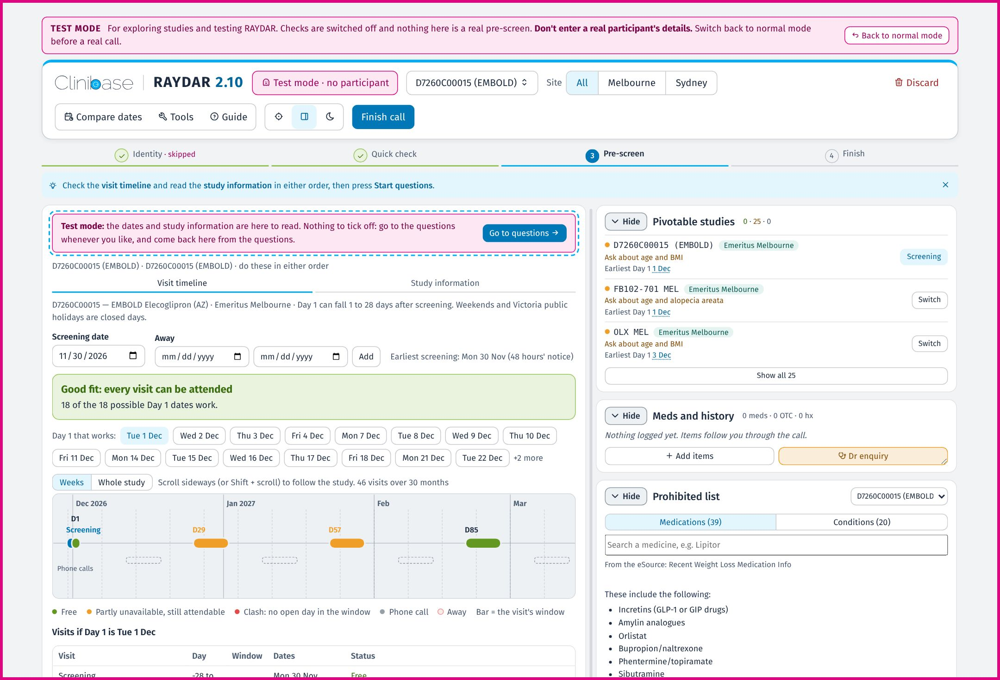
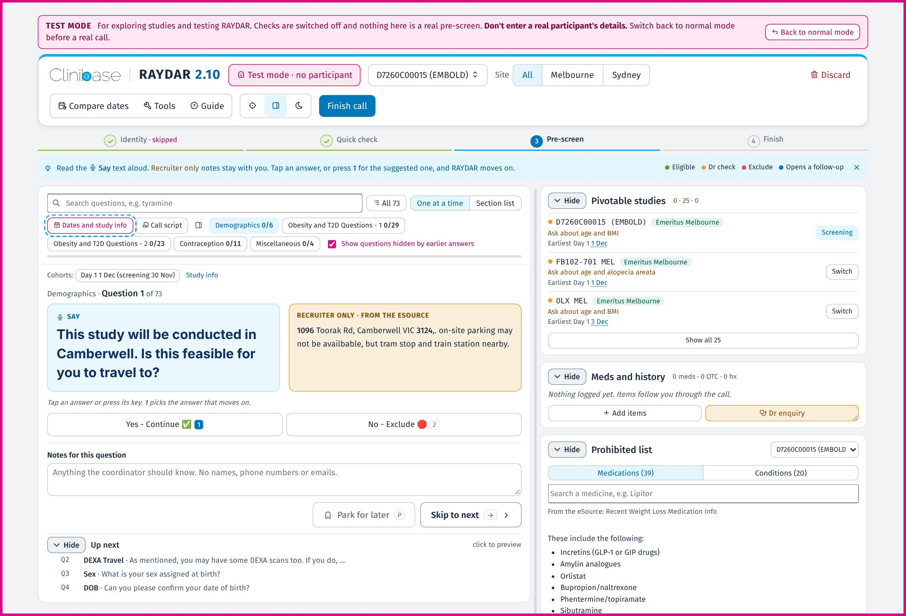
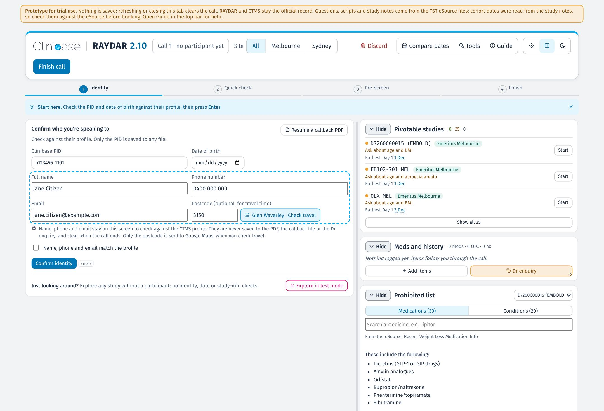
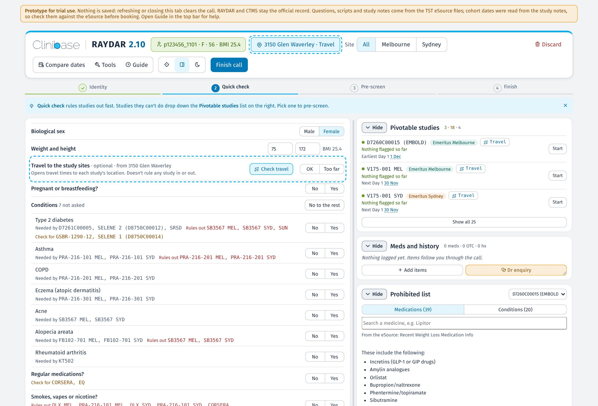
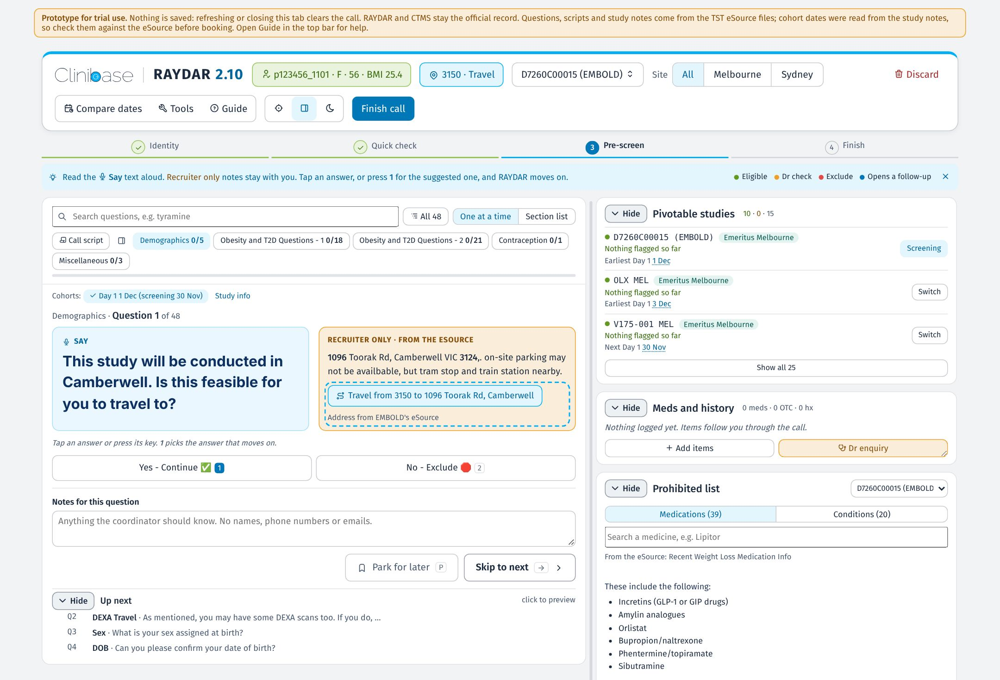

Nothing here is built yet. Screenshots are the real RAYDAR 2.10 with the new parts drawn in, outlined in dashed blue. Pick an option where there's a choice; the questions are gathered at the end.
In 2.10 a study opens in test mode straight at the questions, so the visit timeline and study information are skipped. Instead, it opens where a real call does, with both tabs there to read, and "Go to questions" works straight away. From the questions, "Dates and study info" goes back.


The identity check asks for full name, phone, email and an optional postcode. With a postcode, "Travel" shows in the header for the whole call, as a row in Quick check, beside each study in Pivotable studies, and on the question that names the study's location.



I read your colleague's Commute Finder. It's a Chrome extension: highlight a postcode on any page and it shows drive or public transport time to a saved site (Emeritus Melbourne, Emeritus Botany, Veritus Melbourne, St Vincent's Sydney), ranks the sites, suggests a departure time, and drafts a route email. It gets its times from Google's paid Maps services, using keys written into the extension. Two ways to bring it into RAYDAR:
Google Maps in its own window. RAYDAR opens Google Maps directions from the postcode to the study's address, by car or public transport. Works for every recruiter with nothing installed, no key and no cost. The times appear in Google Maps rather than inside RAYDAR.
The Commute Finder's times inside RAYDAR. Times for each study's site, ranked, without leaving RAYDAR. Only for recruiters who have the extension installed, and it needs a small addition to the extension so RAYDAR can ask it (your colleague's code). RAYDAR never holds the Google keys.
The extension has two Google Maps keys written into its files, so anyone with the extension can read them and run up charges. I won't copy them into RAYDAR, which is shared through Dropbox, or into the repository. Worth asking your colleague to restrict both keys in Google Cloud to the Maps services they use. Option G1 needs no key at all.
Travel goes to the address in the study's own eSource where there is one (quoted, never retyped). For the rest I need a default address per site, which TST or a team lead can also set per study in the study admin.
| Site | Studies with an address in their eSource | Studies without one |
|---|---|---|
| Emeritus Melbourne | EMBOLD, SB3567: 1096 Toorak Rd, Camberwell VIC 3124 | FB102-701, OLX, PRA-216-101/201/301, V175-001, VBE |
| Emeritus Sydney | D7261C00005, GSBR-1290-12, SB3567, SELENE 1: 12 Lord St, Botany NSW 2019 · SELENE 2: 84 Pitt Street, Sydney NSW 2000 · SRSD: 22 Mons Rd, Westmead NSW 2145 | FB102-701, OLX, PRA-216-101/201/301, V175-001 |
| Veritus | none | CORSERA, EQ, KT502, SUN |
In the Prohibited list panel, "Check a list" sits beside the search. The recruiter types the names as heard, one per line. RAYDAR fixes spelling, asks when a name could be more than one medicine (with "None of these"), checks each against the chosen study, and adds them all to the med log in one go. Drawn with your example and real results for EMBOLD.
Typing the list. Anything after the name ("1mg weekly") is kept and goes into the med log's Dosage and Frequency.
The results. Each line shows what RAYDAR read and its result for the chosen study. Excluded and Doctor check come with the list item and time window.
When RAYDAR isn't sure. It offers its best guesses and waits for the recruiter. "None of these" keeps the name as typed, marked not recognised.
Why it happens. Once you scroll 80 px, the header switches to its slim version in one step: the step bar and buttons vanish, so the header loses about 106 px at once and everything below jumps. On a page with little to scroll (one question on screen), that same loss makes the page itself 106 px shorter, so the browser snaps you back up. A moment later the side panel grows into the freed space and the page snaps down again: the glitch you see at the bottom. I measured exactly that: a jump of 106 px up, then 106 px down.
The fix. The header floats above the page instead of taking space in it, so its size never changes the page's length, and it slides between full and slim over a fifth of a second. Nothing below it moves. Try both below: scroll each box down to the bottom and back up.
The demo boxes are simplified, but they behave like RAYDAR: same switch points (slim after 80 px, full again near the top), same amount of scrolling as a one-question page. People who've asked their computer for less motion get the slim header without the slide.
Once these are settled I'll build them together as RAYDAR 2.11.